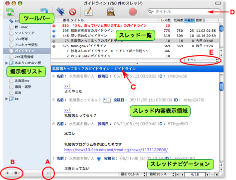

図解 ブラウザウインドウ
図解 ブラウザウインドウ
BathyScaphe のブラウザウインドウは、次の要素で構成されています。
- ツールバー
- 掲示板リスト
- スレッド一覧
- スレッドの内容表示領域
- ステータスバー

- 掲示板リストの幅を変更するには、掲示板リストのスクロールバーの下にあるリサイズボタン（A）をつかんでドラッグします。
- 掲示板リストの表示、非表示を切り替えるには、ツールバーの「掲示板リスト」ボタンをクリックするか、「掲示板」＞「掲示板リストを表示（隠す）」と選びます。
- スレッド一覧とスレッドの内容表示領域の比率を調整するには、境界（B）をドラッグします。
- スレッドの内容表示領域を隠すには、境界をダブルクリックします。もっと詳しく
- ステータスバーには、動作状況やスレッドの件数などが表示されます。ステータスバーの表示／非表示を切り替えるには、「表示」＞「ステータスバーを表示（隠す）」と選びます。
- 掲示板リスト下部の小さな歯車ボタン（C）をクリックすると、掲示板の追加やリストの編集、アドレスの更新などをすぐに実行できます。もっと詳しく知りたいときは、下の「関連項目」の各トピックをクリックしてください。
- ツールバーの検索フィールド(D)は、スレッド一覧からスレッドを検索するときに使います。もっと詳しく
- スレッドの内容表示領域の下部には、表示範囲選択メニュー、レス移動ボタン、レス番号フィールド（E）があります。もっと詳しく
- スレッド一覧の下部には、スレッド一覧をフィルタリングするためのポップアップボタン（F）があります。もっと詳しく